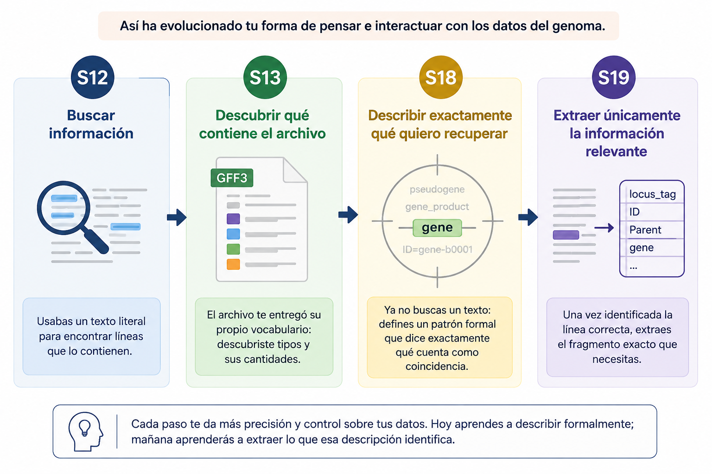
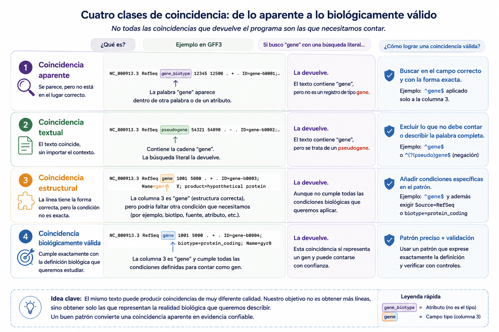
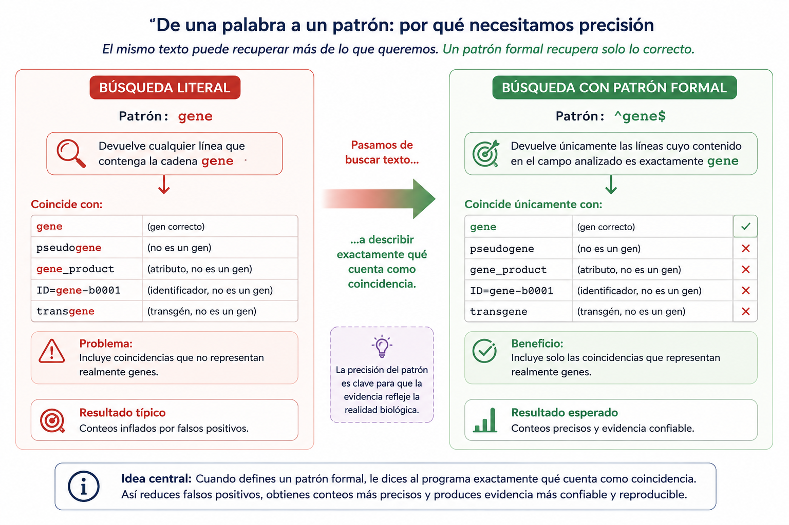
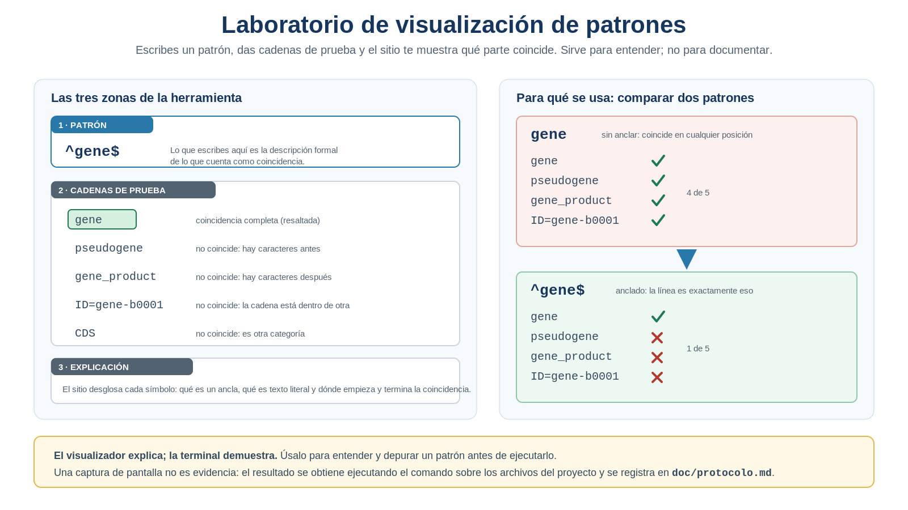
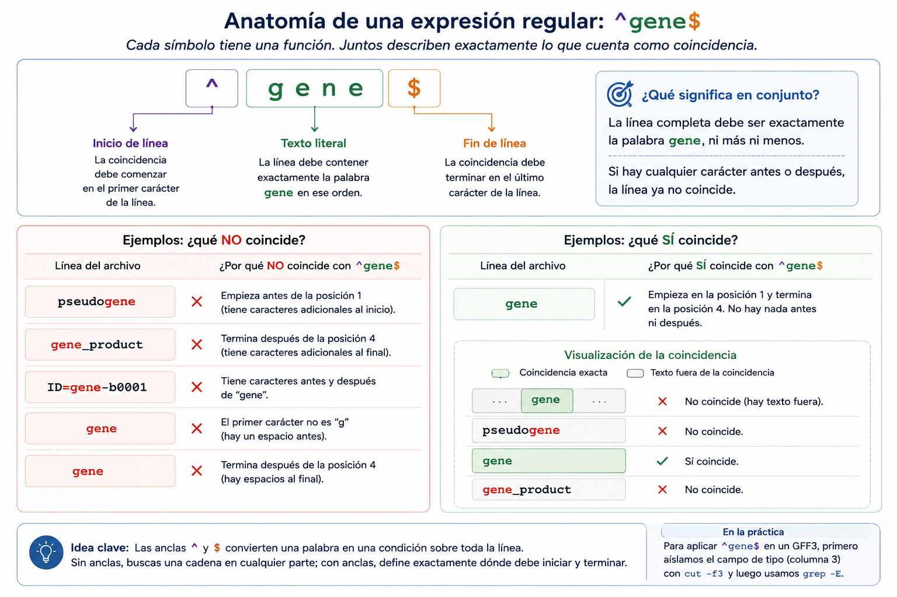
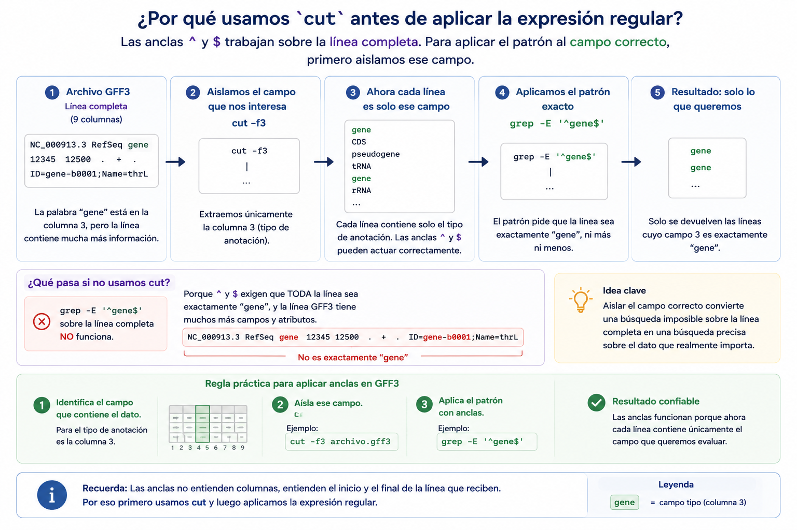
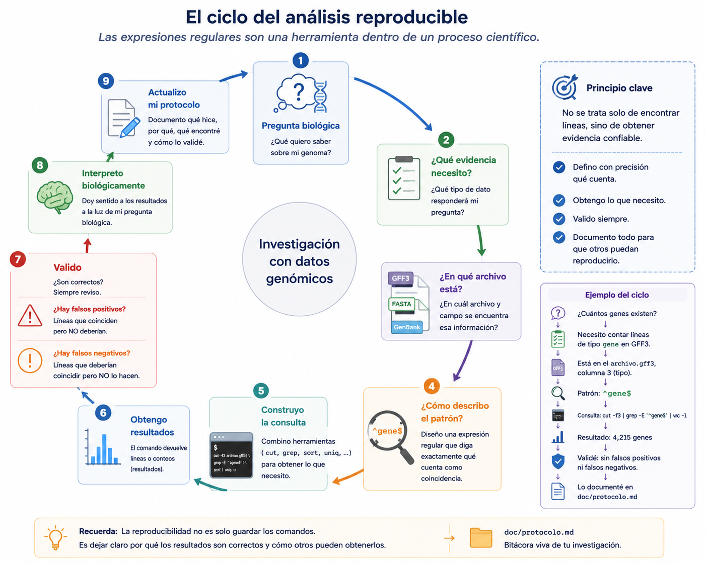
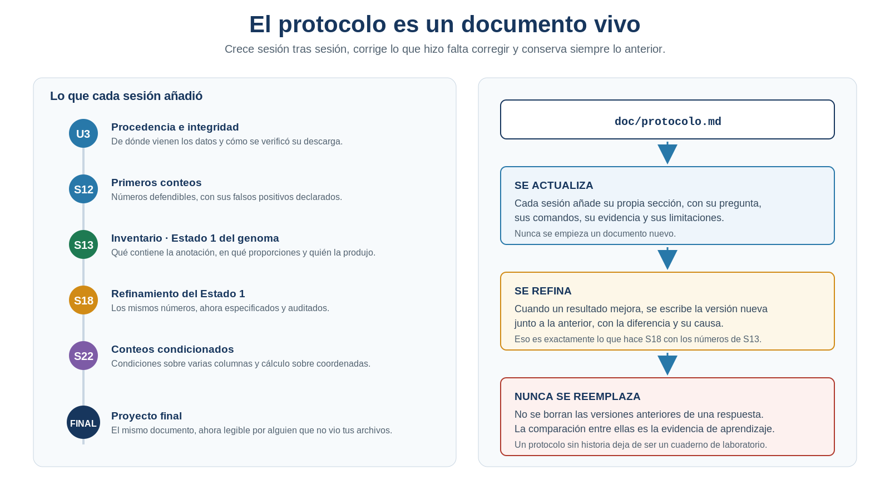
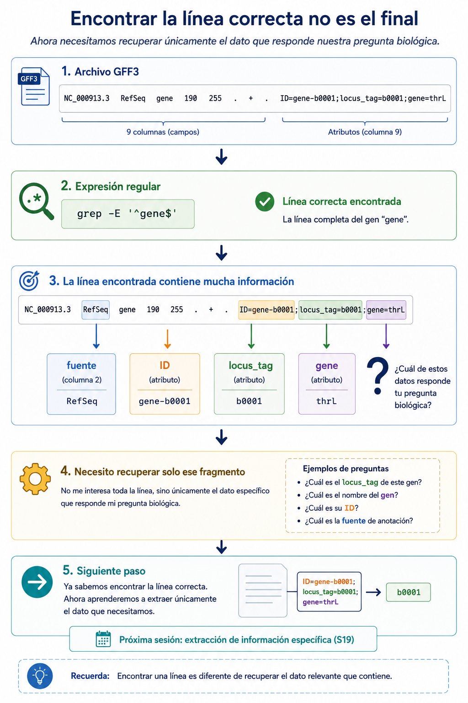

S18 — Precisar: decir exactamente lo que se quiere buscar
Antes de clase leerás las secciones marcadas como indispensables y harás un primer intento: escribir en español, con toda la precisión de que seas capaz, qué debería cumplir una línea de tu archivo para que la cuentes como un gen. Durante el taller traducirás esa frase a un patrón formal, comprobarás cuántos registros contabas de más y volverás sobre los números que ya escribiste en tu protocolo. Después integrarás en doc/protocolo.md la sección Refinamiento del Estado 1 del genoma. El primer intento es formativo: importa la frase que escribiste, no que acertaras el símbolo.
Ficha del módulo
| Elemento | Descripción |
|---|---|
| Sesión | S18, 2 horas |
| Unidad | U4. Procesamiento y exploración de datos genómicos |
| Competencia principal | D. Análisis y exploración de datos genómicos |
| Competencias integradas | A. Documentación reproducible; B. Entorno Unix; C. Manejo de datos biológicos |
| Propósito | Sustituir la búsqueda literal por una descripción formal de lo que cuenta como coincidencia, y con ello corregir los falsos positivos que quedaron documentados en S12–S13 |
| Consulta previa del Plan | Material clásico L7/L8-expresiones-regulares; este módulo los sustituye como lectura autocontenida |
| Lectura indispensable | Secciones 1–8 de este módulo (~45 min) |
| Lectura de consulta | Buffalo (2015), Cap. 3 y 7; man grep; ProfeUnix Bioinfo |
| Primer intento | Práctica 1: escribir en español la definición exacta de “línea que cuenta como gen”, 20 min, sin abrir archivos |
| Evidencia | Estado 1 refinado: tabla comparativa S13 → S18 con la diferencia de cada conteo, la causa de esa diferencia y el patrón que la corrigió |
| Tarea numerada | Ninguna nueva. La evidencia se incorpora a doc/protocolo.md |
Esta sesión no continúa el mini proyecto ni el examen práctico. Continúa exactamente donde terminó S13. El mini proyecto (S14–S15) y la evaluación individual (S17) aplicaron lo aprendido hasta ahí; hoy se retoma el hilo de la investigación.
Relación con lo que ya sabes
S13 S18
Describir todo lo que hay → Decir exactamente qué quiero
"el archivo declara su vocabulario" "yo declaro qué cuenta como coincidencia"En S13 el archivo te entregó su propio vocabulario. Dejaste de adivinar qué categorías existían y obtuviste la distribución completa de la anotación. Pero para pedir una de esas categorías seguiste escribiendo un texto suelto, y un texto suelto no sabe dónde está ni dónde termina.
| Habilidad que ya tienes | Dónde la aprendiste | Qué cambia en S18 |
|---|---|---|
Buscar líneas con grep |
S12 | El patrón deja de ser una palabra y pasa a ser una descripción |
Excluir con grep -v |
S12 | Sigue siendo útil, pero ahora puedes excluir por forma, no solo por texto |
Restringir a palabra completa con grep -w |
S12 | Descubres qué hace realmente -w y por qué a veces no basta |
Extraer columnas con cut |
S11 | Se vuelve el paso que hace posible anclar: sin él, no sabes en qué campo caíste |
Construir distribuciones con sort \| uniq -c |
S13 | La misma tubería, alimentada con líneas que ahora sí son las correctas |
Contar registros con grep -c |
S12 | Cuentas líneas que cumplen una especificación, no líneas que contienen un texto |
Lo nuevo de hoy no es un comando: grep es el mismo de S12. Lo nuevo es el lenguaje con el que le hablas.

Figura 18.1. La evolución del razonamiento, de S12 a S19. Cada paso aporta más precisión y más control sobre los datos: hoy aprendes a describir formalmente; en la siguiente sesión, a extraer lo que esa descripción identifica. Elaboración propia.
Tu lugar en el ciclo de la evidencia
Las seis sesiones que cierran la unidad no enseñan seis herramientas: enseñan los seis pasos por los que una observación se convierte en evidencia científica. Hoy trabajas el primero.
▶ S18 SELECCIONAR la evidencia correcta ← estás aquí
S19 IDENTIFICAR el objeto biológico correcto
S20 NORMALIZAR la evidencia para compararla
S21 CONFRONTAR con una fuente ajena
S22 CUANTIFICAR e interpretar
S23 INTEGRAR el ciclo completo, reproducibleAntes de contar, comparar o interpretar nada, hay una pregunta previa que casi siempre se salta: ¿estoy mirando las líneas que debo? Esa es la pregunta de hoy.
Dónde estás en la investigación
| Pregunta de la investigación | En S18 |
|---|---|
| ¿Cómo está organizado por dentro un archivo biológico? | ✔ Resuelta en S10–S11 |
| ¿De qué tamaño es el genoma? | ◐ Cuatro respuestas acumuladas; se cierra en S22 |
| ¿Qué tipos de features contiene la anotación? | ✔ Resuelta en S13 |
| ¿Cuántos registros hay de cada tipo? | ✔ Refinado hoy: se eliminan las coincidencias parciales (se cierra en S22) |
| ¿Cuántos genes existen? | ✔ Refinado hoy: sin pseudogenes y sin coincidencias en atributos (se cierra en S22) |
| ¿Cuántas CDS existen? | ✔ Refinado hoy: contando solo el campo de tipo |
| ¿Cuántos genes existen por cadena? | ✔ Primera respuesta hoy (se refina en S22) |
| ¿Cuántos replicones tiene? | ✔ Resuelta en S13; hoy se reescribe su comando de forma más robusta |
| ¿Qué identificadores tienen los genes? | ☐ S19 |
| ¿Coinciden los identificadores del FASTA y del GFF3? | ☐ S19 |
| ¿Cómo organizar la información para responder nuevas preguntas? | ☐ S20–S23 |
Fíjate en que hoy casi no aparecen preguntas nuevas. Esta es una sesión de refinamiento: vuelve sobre respuestas que ya diste para hacerlas más precisas. Eso también es investigar —de hecho, es la mayor parte del trabajo real.
Resultados de aprendizaje
Al finalizar la sesión podrás:
- Distinguir cuatro cosas que hasta ahora confundías: coincidencia aparente, coincidencia textual, coincidencia estructural y coincidencia biológicamente válida.
- Traducir una definición escrita en español a un patrón formal, y de vuelta.
- Anclar un patrón al inicio o al final de la línea y explicar qué falso positivo elimina cada ancla.
- Describir conjuntos de caracteres mediante clases y comodines, y reconocer cuándo un carácter debe escaparse.
- Expresar repetición y alternativa mediante cuantificadores, agrupación y alternancia.
- Explicar qué hace realmente
grep -wy en qué situación deja de ser suficiente. - Auditar una consulta propia: estimar sus falsos positivos y sus falsos negativos con evidencia.
- Corregir un resultado ya escrito en tu protocolo, documentando la diferencia y su causa.
- Argumentar por qué un resultado refinado representa mejor la realidad biológica que el anterior, sin presentarlo como una simple “corrección de errores”.
Lista de verificación previa
Antes del taller comprueba que tienes a mano:
Si perdiste results/s13/, puedes regenerarlo, pero anótalo en el protocolo. Un número que no puedes volver a producir no es una evidencia: es un recuerdo.
Ruta de S18
| Momento | Qué hacer | Tiempo estimado |
|---|---|---|
| Antes de clase | Leer las secciones 1–8; resolver la Práctica 1 (definición en español) | 45 + 20 min |
| Taller (1.ª hora) | Laboratorio de visualización (Práctica 2); anclas y clases (Prácticas 3 y 4) | 60 min |
| Taller (2.ª hora) | Auditoría de falsos positivos (Práctica 5); genes por cadena (Práctica 6); refinamiento (Práctica 7) | 60 min |
| Después del taller | Redactar la sección S18 del protocolo con la tabla comparativa | 40 min |
Las secciones 1–8 son indispensables. La sección 9 (documentación) se trabaja después del taller.
1. La deuda que dejó S13 [Indispensable]
Al cerrar S13 escribiste en tu protocolo un número de genes. Ese número tiene un problema que ya conoces y que no supiste resolver: incluye cosas que no querías contar.
Recupera tu inventario. Entre las categorías aparecían, con frecuencias distintas pero en líneas separadas:
N gene
n pseudogeneEl archivo distingue perfectamente las dos categorías. Tu consulta, no. Y no por descuido: porque el lenguaje que usabas no permite decirlo.
Concretamente, en S12 y S13 no pudiste expresar ninguna de estas tres ideas:
- la palabra completa, no un fragmento dentro de otra palabra;
- al principio del campo, no en cualquier lugar de la línea;
- exactamente esto y nada más, no “esto en algún sitio”.
Y cada vez que necesitaste precisión, la conseguiste rodeando el problema: recortando la columna con cut antes de buscar, exigiendo palabra completa con -w, apilando un grep -v más para quitar las líneas de comentario. Funcionó. Pero funcionó por cómo es tu archivo concreto, no porque hubieras dicho lo que querías decir.
La pregunta que gobierna toda esta sesión es esta:
¿Cómo describimos exactamente aquello que queremos encontrar?
2. Cuatro clases de coincidencia [Indispensable]
Antes de escribir un solo patrón conviene separar cuatro cosas que hasta ahora venías tratando como una sola. Toma la palabra gene y busca dónde aparece en tu archivo.
| Clase de coincidencia | Qué significa | Ejemplo en tu GFF3 |
|---|---|---|
| Aparente | El texto aparece, pero en un lugar que no tiene nada que ver con la pregunta | gene dentro de una descripción funcional en la columna de atributos |
| Textual | El texto aparece como cadena, en cualquier posición | gene dentro de pseudogene |
| Estructural | El texto ocupa el lugar correcto de la estructura del archivo | gene como valor completo de la columna 3 |
| Biológicamente válida | Además de estructural, corresponde al objeto que la pregunta busca | Un registro gene que representa un gen codificante, no un pseudogén ni un fragmento |

Figura 18.2. Las cuatro clases de coincidencia sobre líneas reales de un GFF3. El objetivo no es obtener más líneas, sino solo las que representan la realidad biológica que se quiere describir. Elaboración propia.
Como muestra la Figura 18.2, grep gene te daba las dos primeras clases. Hoy vas a aprender a pedir la tercera. La cuarta —la que de verdad te interesa— no se resuelve con un patrón: requiere conocer la biología del archivo y sus convenciones de anotación, y es la razón por la que la interpretación nunca se delega al comando.
Existen distintas variantes del lenguaje de expresiones regulares. En este curso usaremos únicamente la compatible con grep -E, y el patrón ^(?!pseudo)gene$ que aparece en la figura pertenece a otra variante: en tu terminal no funcionará. Conseguirás el mismo resultado anclando el patrón, como verás en la Sección 3.
Que un programa produzca una salida no significa que esa salida sea correcta. Una búsqueda mal especificada no devuelve un error: devuelve un número razonable, con la magnitud esperada y en el formato esperado. Las consultas también se validan. Ese es el mensaje central de la sesión.
IDEA CLAVE. El mismo texto puede coincidir de cuatro maneras muy distintas. Tu trabajo no es obtener más líneas, sino solo aquellas cuya coincidencia es estructural —el valor exacto del campo correcto— y decidir después, con criterio biológico, si además es válida.
2.1 De buscar un texto a describir un patrón
Hasta ahora escribías:
Busco la palabra
gene.
A partir de hoy escribes:
Busco una línea cuyo campo de tipo empiece con
g, siga coneney termine ahí.
La segunda frase no es más complicada: es más explícita. Dice tres cosas que la primera daba por supuestas —qué caracteres, en qué orden y dónde termina—, y por eso puede comprobarse.

Figura 18.3. De una palabra a un patrón. Al definir un patrón formal le dices al programa qué cuenta como coincidencia; el mismo texto, sin esa especificación, recupera más de lo que se quiere. Elaboración propia.
Una expresión regular es exactamente eso: una frase escrita en un lenguaje formal que describe qué cadenas cuentan como coincidencia. Es el primer lenguaje formal que utilizas en el curso, y lo importante no son sus símbolos, sino que te obliga a decir con precisión algo que antes dejabas implícito.
2.2 Laboratorio de visualización de patrones
Ya sabes qué necesitas: describir un patrón en lugar de buscar un texto. Antes de aprender la sintaxis conviene ver cómo se comporta un patrón, porque así entenderás para qué sirve cada símbolo cuando llegue.
Para eso existen visualizadores interactivos: escribes un patrón arriba, unas cadenas de prueba abajo, y el sitio resalta qué parte de cada cadena coincide. Usaremos dos:
- regex101.com — resalta la coincidencia y explica cada símbolo por separado;
- regexpal.com — más simple, útil para comparar patrones de un vistazo.

Figura 18.4. Anatomía de un visualizador de patrones y el uso que le darás: comparar dos patrones sobre las mismas cadenas y ver, antes de ejecutar nada, cuál de los dos pide lo que quieres. Elaboración propia.
El visualizador sirve para comprender y depurar un patrón; la evidencia se obtiene siempre en la terminal. Una captura de pantalla no es un resultado. Además, estos sitios aceptan por defecto variantes del lenguaje que grep -E no entiende: lo que allí funciona hay que comprobarlo siempre en tu archivo.
Con esa imagen mental, la sintaxis dejará de ser una lista de símbolos: cada uno responde a algo que acabas de ver ocurrir.
Práctica 1 — ¿Qué cuenta como un gen? (antes de clase, primer intento)
Pregunta biológica. ¿Qué debe cumplir exactamente una línea de tu archivo de anotación para que la cuentes como un gen?
Objetivo. Comprometerte con una definición antes de conocer el lenguaje que la formaliza. La distancia entre tu frase y el patrón final es la medida de lo que hoy vas a aprender.
Antes de clase (primer intento). En doc/s18-primer-intento.md:
Define. Escribe en español, en una sola frase y con toda la precisión de que seas capaz, qué debe cumplir una línea para que la cuentes como un gen. No uses símbolos. No consultes el archivo.
Localiza el hueco. Lee tu frase y subraya las partes que no sabrías escribir con las herramientas de S12–S13. Por ejemplo: “que la palabra esté completa”, “que sea el valor entero de la columna”, “que empiece justo ahí”.
Predice el error. Recupera de tu protocolo el conteo de
genede S13 y el depseudogene. ¿Cuántos registros crees que estabas contando de más? Da un número concreto y explica de dónde sale tu estimación.Anticipa el otro lado. ¿Crees que tu consulta de S13 también dejó fuera registros que sí querías contar? Escribe tu apuesta y su razón.
Reformula una más. Haz lo mismo, en dos líneas, con el conteo de
CDS.
Durante el taller. Traducirás tu frase a un patrón, ejecutarás ambos y compararás tu predicción del paso 3 con la diferencia real.
Después del taller. La comparación entra en la tabla de refinamiento del protocolo (Sección 9).
Criterio de logro: tu definición es una frase comprobable —alguien podría decidir, leyendo una línea, si la cumple o no— y tu predicción numérica está justificada, aunque resulte equivocada.
3. Anclar: decir dónde ocurre la coincidencia [Indispensable]
Empecemos por el hueco más evidente de tu frase: “que esté al principio”, “que termine ahí”.
Sintaxis mínima — grep -E
grep -E 'patrón' archivo¿Qué hace? Interpreta el patrón como una expresión regular extendida en lugar de como texto literal. Los símbolos especiales (+, ?, |, paréntesis) funcionan sin necesidad de escaparlos.
¿Por qué aparece en esta sesión? Porque es la puerta de entrada al lenguaje: sin -E, grep también entiende patrones, pero con una sintaxis antigua que obliga a escapar la mitad de los símbolos. Usaremos -E siempre, por coherencia.

Figura 18.5. Anatomía de ^gene$. Las anclas convierten una palabra en una condición sobre toda la línea: sin ellas buscas una cadena en cualquier parte; con ellas defines dónde debe empezar y terminar. Elaboración propia.
Sintaxis mínima — anclas ^ y $
grep -E '^gene' archivo # la línea empieza por "gene"
grep -E 'gene$' archivo # la línea termina en "gene"
grep -E '^gene$' archivo # la línea es exactamente "gene"¿Qué hace? ^ representa el inicio de la línea y $ su final. No coinciden con ningún carácter: marcan una posición.
¿Por qué aparece en esta sesión? Porque es la primera de las tres frases que no podías escribir: “exactamente esto y nada más”. Con las dos anclas juntas, pseudogene deja de coincidir sin que tengas que excluirlo aparte.
Por eso el ancla se aplica después de recortar la columna con cut: es cut quien convierte el campo en una línea. La Figura 18.6 desarrolla esta dependencia, que arrastrarás hasta S22, cuando aprendas a referirte a un campo por su número.

Figura 18.6. Por qué cut va antes que la expresión regular. Las anclas no entienden columnas: entienden el inicio y el final de la línea que reciben. Aislar el campo convierte una búsqueda imposible sobre la línea completa en una búsqueda precisa sobre el dato que importa. Elaboración propia.
Con eso, la consulta de S13 se puede reescribir por fin diciendo lo que quería decir:
# S13: cuenta gene y pseudogene, y cualquier "gene" dentro de otra palabra
cut -f3 results/s12/anotaciones-sin-directivas.gff | grep -c 'gene'
# S18: cuenta únicamente las líneas cuyo tipo es exactamente "gene"
cut -f3 results/s12/anotaciones-sin-directivas.gff | grep -Ec '^gene$'Lee la diferencia como una frase: de “las líneas donde aparece el texto gene” a “las líneas que son el tipo gene”.
El patrón lo interpreta grep, no el shell. Si escribes grep -E ^gene$ archivo sin comillas, el shell puede intentar interpretar $ como el inicio de una variable y pasarle a grep algo distinto de lo que escribiste. Con comillas simples, el patrón llega intacto.
Y de paso resuelve el otro rodeo de S13, el de las líneas de comentario:
grep -v '^#' anotacion.gff3Las líneas que no empiezan por almohadilla. Esa frase, que en S13 no podías escribir, es hoy un patrón de cuatro caracteres. Fíjate en que ahora una sola condición sustituye al filtro que tuviste que apilar para quitar los residuos #!.
El mismo razonamiento sirve en el FASTA, donde los encabezados son justamente las líneas que empiezan por un símbolo concreto:
grep -Ec '^>' genoma.fna # cuántos replicones declara el archivo
grep -E '^>NC_000913' genoma.fna # el encabezado de un replicón concretoCompara ese primer número con los tres caminos que usaste en S13 para contar replicones: es el mismo resultado, pero ahora expresado como una condición sobre la estructura del archivo.
IDEA CLAVE. Un ancla no busca un carácter: marca una posición. Con
^dices dónde empieza, con$dices dónde termina, y con ambas dices esto y nada más. Como las anclas se refieren a la línea completa, el campo tiene que llegarles ya aislado.
Práctica 2 — Ver antes de ejecutar (durante el taller)
Pregunta biológica. ¿Qué cadenas de mi archivo dejan de coincidir cuando anclo el patrón, y por qué exactamente esas?
Objetivo. Comprender el efecto de las anclas visualmente, formular una hipótesis y verificarla sobre datos reales.
Parte A — Ver el patrón en el visualizador
Prepara. Abre regex101.com y escribe como cadenas de prueba, una por línea, valores tomados de tu propio catálogo de S13 más algunos casos difíciles:
gene pseudogene CDS ID=gene-b0001;Name=thrL sequence_featureObserva. Escribe el patrón
geney anota qué parte de cada línea queda resaltada. ¿Cuántas de las cinco coinciden?Predice. Antes de tocar nada, escribe qué crees que pasará al cambiar el patrón a
^gene$. Sé concreto: nombra las líneas que dejarán de coincidir.Comprueba. Cambia el patrón y compara con tu predicción. ¿Qué cadenas cayeron? ¿Alguna te sorprendió?
Aísla las anclas. Prueba ahora
^geney luegogene$por separado. Explica en una frase qué falso positivo elimina cada una. No son intercambiables.
Parte B — Comprobarlo sobre tus datos
Contrasta con los datos reales. Vuelve a la terminal y ejecuta las dos versiones sobre tu archivo:
cut -f3 results/s12/anotaciones-sin-directivas.gff | grep -c 'gene' cut -f3 results/s12/anotaciones-sin-directivas.gff | grep -Ec '^gene$'Explica la diferencia. Resta ambos números. Ahora comprueba si esa diferencia coincide con la frecuencia de
pseudogeneen tu inventario de S13. Si coincide exactamente, ya sabes de dónde venía todo el error. Si no coincide, hay una tercera categoría que también contenía la cadenagene: localízala en tu catálogo y nómbrala.Documenta. Guarda los dos números y la diferencia; entran en la tabla de refinamiento.
Producto esperado. La diferencia numérica entre ambas consultas, explicada categoría por categoría, no solo cuantificada.
Criterio de logro: predices antes de comprobar, distingues el efecto de ^ del de $, y tu explicación de la diferencia da cuenta de todos los registros sobrantes, no solo de los pseudogenes.
Ver retroalimentación
Las cinco cadenas de prueba son las mismas para todo el mundo, así que estas respuestas son exactas.
Pasos 2 y 3. Con el patrón gene coinciden tres: gene, pseudogene e ID=gene-b0001;Name=thrL. No coinciden CDS ni sequence_feature. Fíjate en dónde queda el resaltado: en pseudogene ilumina solo el final; en ID=gene-b0001, un fragmento en medio. El patrón nunca dijo «la palabra completa»; dijo «estas cuatro letras, en algún sitio».
Paso 4. Con ^gene$ sobrevive una sola: gene. Caen pseudogene —tiene algo antes— e ID=gene-b0001;Name=thrL —tiene algo antes y algo después—.
Paso 5. Las anclas no son intercambiables: cada una elimina una familia distinta de falso positivo.
| Patrón | Coincide | Elimina | Sigue colándose |
|---|---|---|---|
^gene |
gene |
lo que lleva algo antes: pseudogene |
lo que lleva algo después: gene_biotype |
gene$ |
gene, pseudogene |
lo que lleva algo después | lo que lleva algo antes: pseudogene |
^gene$ |
gene |
ambas | — |
Si respondiste que hacen «lo mismo pero al revés», la tabla muestra por qué no: gene$ sigue contando los pseudogenes, que es exactamente el error que arrastras desde S13.
La diferencia entre ambos conteos son los registros que contienen gene sin ser gene, y depende de tu genoma y de quién lo anotó. Lo esperable es que iguale a la frecuencia de pseudogene de tu inventario de S13. Si sobra diferencia, hay otra categoría en la columna 3 que también contiene esa cadena: localízala en tu catálogo y nómbrala. No compares la cifra con la de un equipo que trabaja otro genoma —lo que debe coincidir es el razonamiento: cada unidad de la diferencia tiene un nombre y una categoría—.
4. Describir caracteres: clases, comodín y escape [Indispensable]
Anclar resuelve dónde. Falta qué: hasta ahora todos los caracteres del patrón eran literales, y eso solo sirve cuando conoces la cadena exacta de antemano. Muchas preguntas biológicas no son así.
Sintaxis mínima — clases [ ]
grep -E '^[+-]$' archivo # una línea que es exactamente + o -
grep -E '^[ACGT]+$' archivo # una línea formada solo por A, C, G o T
grep -E '^[^#]' archivo # una línea que NO empieza por almohadilla¿Qué hace? Una clase describe un solo carácter, elegido entre los que enumeras. Con ^ justo después del corchete, la clase se invierte: cualquier carácter salvo esos.
¿Por qué aparece en esta sesión? Porque la columna 7 de tu GFF3 solo admite dos valores, + y -, y porque una secuencia biológica es, literalmente, “una cadena hecha solo de estos caracteres”. Es la forma natural de describir un alfabeto.
Sintaxis mínima — comodín . y escape \
grep -E 'NC_0009.3' archivo # el punto es un comodín: coincide con cualquier carácter
grep -E 'NC_0009\.3' archivo # el punto escapado: coincide solo con un punto literal¿Qué hace? . representa cualquier carácter. La barra invertida delante de un símbolo especial cancela su significado y lo convierte en literal.
¿Por qué aparece en esta sesión? Porque los identificadores con los que trabajas están llenos de puntos —NC_000913.3, GCF_000005845.2— y el punto es el símbolo más traicionero del lenguaje: sin escapar, NC_000913.3 también coincidiría con NC_000913x3. Nunca dará error; simplemente contará de más.
El punto sin escapar es la causa silenciosa de falsos positivos más frecuente cuando se trabaja con números de accesión y versiones. Cada vez que un patrón tuyo contenga un punto, pregúntate si querías decir “cualquier carácter” o “un punto”.
Esto tiene consecuencias inmediatas sobre los datos que ya tienes. Comprueba, por ejemplo, que la accesión que documentaste en la Unidad 3 es exactamente la que aparece en tus archivos:
grep -Ec '^>NC_000913\.3' genoma.fna # el encabezado de esa versión concreta
grep -Ec '^NC_000913\.3' anotacion.gff3 # registros de ese replicón en el GFF3Si cambias \. por . los números pueden no moverse —y esa es justamente la trampa—: el patrón seguiría aceptando una versión distinta del mismo replicón, y no te avisaría.
IDEA CLAVE. Una clase describe un carácter entre varios posibles; el punto los admite todos. Por eso el punto necesita escaparse cuando de verdad quieres decir “un punto”: en accesiones y versiones, esa barra invertida es la diferencia entre identificar un archivo y parecer que lo identificas.
Práctica 3 — El alfabeto de un archivo (durante el taller)
Pregunta biológica. ¿Contiene mi archivo FASTA algún carácter que no sea una base canónica, y qué significaría biológicamente si lo tuviera?
Objetivo. Usar una clase de caracteres para auditar la composición de un archivo, en lugar de suponerla.
Pasos.
Predice. ¿Esperas que la secuencia de tu genoma contenga únicamente A, C, G y T? Escribe tu apuesta y qué otros caracteres podrían aparecer legítimamente.
Aísla la secuencia. Recupera de S12 la forma de quedarte solo con las líneas de secuencia del FASTA (las que no empiezan por
>). Ahora puedes escribirlo como un patrón anclado:grep -Ev '^>' genoma.fna | headBusca lo inesperado. Localiza las líneas de secuencia que contengan algún carácter fuera del alfabeto canónico:
grep -Ev '^>' genoma.fna | grep -Ec '[^ACGT]'Interpreta. Si el número es cero, tu genoma no tiene ambigüedades declaradas. Si no lo es, averigua qué carácter es y qué significa:
Nindica base indeterminada, y los demás códigos IUPAC (R,Y,S,W…) indican ambigüedades concretas. Un carácter inesperado no es un error del archivo: suele ser información sobre la calidad del ensamblado.Comprueba el caso de las minúsculas. Ejecuta la misma consulta con
grep -Eci '[^acgt]'. ¿Cambia el número? Si cambia, tu archivo usa minúsculas para marcar regiones repetitivas (soft-masking), y tu consulta anterior las estaba contando como caracteres extraños.Documenta. Anota qué alfabeto usa realmente tu archivo. Es un dato de procedencia que complementa la ficha de la Unidad 3.
Producto esperado. Una afirmación con evidencia sobre la composición de tu FASTA, y la identificación de cualquier carácter no canónico con su interpretación.
Criterio de logro: distingues “no aparece en el archivo” de “no existe en el organismo”, y detectas el efecto de las mayúsculas y minúsculas antes de concluir.
5. Repetición y alternativa: cuantificadores, grupos y | [Indispensable]
Falta describir cadenas cuya longitud no conoces, y cadenas que admiten varias formas.
Sintaxis mínima — cuantificadores *, +, ?
grep -E '^gene.*' archivo # "gene" seguido de cualquier cosa, incluso nada
grep -E '^[0-9]+$' archivo # una línea formada por uno o más dígitos
grep -E '^rRNAs?$' archivo # "rRNA" con una "s" final opcional¿Qué hace? Cada cuantificador indica cuántas veces se repite lo que tiene inmediatamente delante: * cero o más, + una o más, ? cero o una.
¿Por qué aparece en esta sesión? Porque los identificadores biológicos tienen partes de longitud variable y describir “uno o más” es la única forma de aceptar todos los casos sin enumerarlos. El locus_tag de tu genoma es el ejemplo más claro: una o más letras seguidas de varios dígitos, como b0001 o SAOUHSC_00001. Esa forma se describe así:
grep -Ec 'locus_tag=[A-Za-z]+_?[0-9]+' results/s12/anotaciones-sin-directivas.gffCuenta los registros que declaran un locus_tag con esa estructura. Todavía no puedes quedarte con el identificador en sí —eso es S19—, pero ya puedes preguntarle al archivo cuántos lo tienen y si alguno se sale del formato.
* no significa lo mismo que en el shell
En S4 aprendiste que *.fna significa “cualquier archivo terminado en .fna”. En una expresión regular, * no representa caracteres por sí solo: modifica al elemento anterior. El equivalente regex de aquel comodín del shell es .*. Confundir ambos es el error más frecuente de esta sesión.
Sintaxis mínima — agrupación ( ) y alternancia |
grep -E '^(tRNA|rRNA|ncRNA)$' archivo # el tipo es exactamente uno de los tres¿Qué hace? Los paréntesis agrupan una parte del patrón; la barra vertical separa alternativas. El grupo delimita hasta dónde llega la alternancia.
¿Por qué aparece en esta sesión? Porque muchas preguntas biológicas son sobre conjuntos de categorías: “todos los genes de RNA”, “cromosoma o plásmido”. Sin agrupar, ^tRNA|rRNA$ significa algo distinto y equivocado: “empieza por tRNA” o “termina en rRNA”.
Cuando un patrón con alternancia te dé un número raro, mira primero los paréntesis. La precedencia de | es más baja que la de todo lo demás, así que se come el patrón entero salvo que lo delimites.
Sintaxis mínima — grep -w, reinterpretado
grep -w 'gene' archivo¿Qué hace? Exige que la coincidencia esté delimitada por fronteras de palabra: a los lados solo puede haber caracteres que no sean letras, dígitos o guion bajo.
¿Por qué vuelve a aparecer? Porque en S12 lo usaste sin saber qué hacía, y ahora puedes decirlo con precisión: -w es una abreviatura para un patrón de fronteras. Por eso excluye pseudogene —delante de gene hay una o, que es carácter de palabra— pero no excluye ID=gene-b0001, donde los vecinos son = y -, que no lo son.
Esta es la razón por la que -w no bastaba. Elimina las coincidencias dentro de otra palabra, pero no las coincidencias en la columna equivocada. Las anclas resuelven lo segundo; -w no puede.
IDEA CLAVE. Los cuantificadores describen cuántas veces; los paréntesis, hasta dónde llega una alternativa. Con ellos dejas de necesitar la cadena exacta: describes su forma. Y
grep -wresulta ser un caso particular de todo esto, no una herramienta aparte.
Práctica 4 — Los genes de RNA (durante el taller)
Pregunta biológica. ¿Cuántos registros de RNA no codificante contiene la anotación de mi genoma, y qué proporción representan del total?
Objetivo. Construir un patrón con alternancia a partir del catálogo real, y comprobar que selecciona exactamente las categorías que pretendes.
Parte A — Construir el patrón y verificarlo
Consulta tu catálogo. Abre
results/s13/catalogo-tipos.txty anota todas las categorías de tu archivo relacionadas con RNA. No supongas cuáles hay: léelas.Escribe el patrón. Constrúyelo con alternancia y anclas, usando exactamente los nombres de tu catálogo. Por ejemplo, si tu archivo contiene
tRNA,rRNAyncRNA:cut -f3 results/s12/anotaciones-sin-directivas.gff | grep -Ec '^(tRNA|rRNA|ncRNA)$'Verifica por otro camino. Suma a mano las frecuencias de esas mismas categorías en tu inventario de S13. ¿Coincide con el número anterior? Si no coincide, tu patrón selecciona de más o de menos: encuentra cuál.
Parte B — Poner a prueba la precedencia
Prueba el error clásico. Ejecuta ahora la versión sin paréntesis y compárala con la del paso 2:
cut -f3 results/s12/anotaciones-sin-directivas.gff | grep -Ec '^tRNA|rRNA|ncRNA$'Antes de mirar el número, escribe qué está pidiendo realmente ese patrón. No es “una de las tres, exacta”, sino “empieza por tRNA” o “contiene rRNA en cualquier posición” o “termina en ncRNA”: tres condiciones distintas y ninguna es la que querías.
Interpreta la coincidencia, si la hay. Es muy probable que ambos números salgan iguales. Eso no significa que el patrón sea correcto: significa que en tu catálogo no existe ninguna categoría que empiece por
tRNAsin sertRNA, ni que contengarRNAdentro. Compruébalo volviendo al visualizador y añadiendo como cadenas de prueba casos comorRNA_gene,tRNA_pseudogeneomisc_RNA. ¿Cuáles coincidirían con cada versión?Es exactamente la misma lección de S13: funcionó por cómo es tu archivo, no porque hayas dicho lo que querías decir. Un patrón que acierta por casualidad falla en cuanto cambias de genoma.
Parte C — Interpretar y acotar
Interpreta. Calcula la proporción de registros de RNA sobre el total. ¿Es la que esperabas en un genoma bacteriano? Compárala con la proporción de
CDS.Declara el límite. Escribe qué no te autoriza a afirmar este número: sigue siendo un conteo de registros, y las categorías presentes dependen de la fuente de anotación que identificaste en S13.
Producto esperado. El conteo de registros de RNA obtenido por dos caminos independientes, con su proporción e interpretación.
Criterio de logro: construyes el patrón desde tu catálogo real (no desde una lista supuesta), detectas el efecto de la precedencia de | y contrastas el resultado con el inventario de S13.
6. Validar una consulta: falsos positivos y falsos negativos [Indispensable]
Aquí llega la idea más importante de la sesión, y no es un símbolo.

Figura 18.7. El ciclo del análisis reproducible. Las expresiones regulares son un solo eslabón —el paso 4— dentro de un proceso que empieza en una pregunta biológica y termina actualizando el protocolo. La validación no es opcional: es el paso que convierte un resultado en evidencia. Elaboración propia.
Fíjate en el paso 7 de la Figura 18.7. Cuando una consulta devuelve un número, ese número puede fallar de dos maneras distintas:
| Tipo de error | Qué significa | Cómo se detecta |
|---|---|---|
| Falso positivo | Contaste algo que no querías contar | Mirar las líneas que sí coincidieron y buscar intrusos |
| Falso negativo | Dejaste fuera algo que sí querías | Mirar las líneas que no coincidieron y buscar ausencias injustas |
El falso positivo es fácil de ver: basta leer la salida. El falso negativo es invisible, porque para verlo tienes que mirar justamente donde no miraste. Por eso la técnica más útil de hoy es sencilla y contraintuitiva: invierte tu consulta y lee lo que descartaste.
# Lo que mi patrón dejó fuera
cut -f3 results/s12/anotaciones-sin-directivas.gff | grep -Ev '^gene$' | sort -uSi en esa lista aparece algo que biológicamente sí querías contar, tienes un falso negativo. Un número que solo has mirado por un lado no está validado.
La precisión forma parte del pensamiento científico, no de la informática. Un conteo que no distingue gene de pseudogene no es un problema de sintaxis: es una afirmación biológica falsa sostenida por una evidencia mal construida.
IDEA CLAVE. Un resultado no está validado hasta que lo has mirado por los dos lados: lo que entró y no debía, y lo que quedó fuera y sí debía. Invertir la consulta con
-ves la forma más barata de ver lo segundo, que es justamente lo que ninguna salida te va a mostrar sola.
Práctica 5 — Auditar mi propio conteo de S13 (durante el taller)
Pregunta biológica. ¿Cuánto se equivocaba el número de genes que escribí en mi protocolo, y por qué exactamente?
Objetivo. Cuantificar el error de tu propia evidencia anterior y explicar su origen registro por registro. No se trata de corregir: se trata de saber de qué estaba hecho el error.
Parte A — Cuantificar el error
Recupera. Copia de tu protocolo el número de genes de S13 y el comando exacto que lo produjo.
Refina. Ejecuta la versión anclada y anota el nuevo número.
Cuantifica. Calcula la diferencia absoluta y el porcentaje de error respecto al número refinado. Compáralo con la predicción que hiciste en la Práctica 1, paso 3.
Parte B — Explicar el error
Identifica los intrusos. Averigua qué categorías aportaban los registros sobrantes:
cut -f3 results/s12/anotaciones-sin-directivas.gff | grep 'gene' | grep -Ev '^gene$' | sort | uniq -c | sort -nrEsa salida es el inventario de tus falsos positivos. Cada línea explica una parte de la diferencia; sus frecuencias deben sumar exactamente la diferencia del paso 3. Compruébalo.
Busca el otro lado. Ahora invierte la consulta y revisa el catálogo de lo descartado. ¿Hay alguna categoría que, biológicamente, deberías haber contado como gen? Argumenta tu decisión: no todas las respuestas son iguales, y la decisión es tuya, no del comando.
Parte C — Extender la auditoría
Repite con
CDS. Mismo procedimiento, dos minutos. ¿El error es del mismo tamaño? Si es mucho menor, explica por qué: ¿es que tu patrón era mejor, o que ninguna otra categoría contenía esa cadena?Prueba el caso de los atributos. Cuenta ahora sobre la línea completa, sin recortar la columna:
grep -c 'gene' results/s12/anotaciones-sin-directivas.gffCompara con los dos números anteriores. Ese tercer número —enorme— es el que habrías obtenido sin
cut, y mide cuántas veces aparece la cadenageneen la columna de atributos. Es la demostración de por qué la coincidencia estructural importa.Documenta. Todo esto va a la tabla de refinamiento (Sección 9).
Producto esperado. Para cada conteo auditado: valor previo, valor refinado, diferencia, inventario de falsos positivos que la explica y decisión razonada sobre los posibles falsos negativos.
Criterio de logro: la suma de tus falsos positivos cuadra exactamente con la diferencia, y declaras al menos un caso en el que la decisión de contar o no contar dependió de un criterio biológico y no del patrón.
7. Una pregunta nueva: los genes por cadena [Indispensable]
No todo es refinar. Con las anclas y las clases puedes responder por primera vez una pregunta que llevaba abierta desde S11: ¿cómo se reparten los genes entre las dos cadenas del DNA?
El dato está en la columna 7, que solo admite dos valores, + y -. La operación es la misma distribución de frecuencias de S13, pero aplicada a dos columnas a la vez y restringida a un tipo:
cut -f3,7 results/s12/anotaciones-sin-directivas.gff \
| grep -E $'^gene\t' \
| cut -f2 \
| sort | uniq -cLéela como una frase: quédate con el tipo y la cadena, conserva solo las líneas cuyo tipo es exactamente gene, quédate ahora con la cadena y cuenta cuántas hay de cada una.
$'...' es una forma de comillas del shell que convierte \t en un tabulador real antes de pasárselo a grep. Es necesaria porque grep -E no interpreta \t por sí mismo. Si tu patrón con tabuladores no encuentra nada, esta suele ser la causa.
Fíjate en lo que acabas de hacer: has anclado al inicio y has exigido que a continuación venga un tabulador, es decir, que el campo termine ahí. Es la misma idea de ^gene$, expresada con el delimitador en lugar del final de línea.
IDEA CLAVE. Precisar no sirve solo para corregir lo que ya sabías: te deja hacer preguntas que antes no podías formular. El reparto por cadena estaba en tu archivo desde S11, esperando a que supieras pedir “tipo exactamente gene, y dime su cadena”.
Práctica 6 — ¿Están los genes repartidos entre las dos cadenas? (durante el taller)
Pregunta biológica. ¿Se distribuyen los genes de mi genoma equitativamente entre las dos cadenas, o hay un sesgo?
Objetivo. Responder por primera vez una pregunta nueva usando las herramientas de hoy, e interpretar el resultado biológicamente.
Pasos.
Predice. Antes de ejecutar, escribe qué reparto esperas y por qué. ¿50/50? ¿Un sesgo? Si crees que habrá sesgo, ¿en qué dirección y por qué razón biológica?
Ejecuta. Construye la tubería anterior eslabón por eslabón, mirando la salida de cada uno con
headantes de añadir el siguiente.Verifica. La suma de las dos frecuencias debe coincidir exactamente con tu conteo refinado de genes de la Práctica 5. Si no coincide, hay registros con un valor de cadena distinto de
+y-: localízalos con una clase negada e interprétalos.Convierte a proporción. Calcula el porcentaje de cada cadena. Los números absolutos no se comparan entre genomas; las proporciones, sí.
Interpreta. Contrasta con tu predicción. En bacterias suele observarse un sesgo relacionado con el sentido de la replicación desde el origen; si tu genoma tiene varios replicones, el reparto global puede estar mezclando situaciones distintas.
Declara el límite. Este conteo mezcla todos los replicones. Separarlo por replicón requiere condicionar sobre dos columnas a la vez, y eso llega en S22.
Producto esperado. El reparto de genes por cadena, en frecuencias y proporciones, verificado contra el conteo refinado e interpretado.
Criterio de logro: verificas que las frecuencias suman el total antes de interpretar, y tu interpretación distingue lo que la evidencia muestra de lo que solo sugiere.
8. Qué mejoró hoy y qué sigue sin resolverse [Indispensable]
| Pregunta | Estrategia en S13 | Estrategia en S18 | Qué mejoró | Qué sigue faltando |
|---|---|---|---|---|
| ¿Cuántos genes hay? | grep -w sobre la columna recortada |
Patrón anclado ^gene$ |
El conteo excluye pseudogenes y coincidencias parciales: pasa de aproximado a especificado | Sigue siendo un conteo de registros, no de objetos biológicos |
| ¿Cuántas CDS hay? | Búsqueda literal | Patrón anclado | Se elimina cualquier coincidencia en atributos | La relación CDS/gen sigue sin calcularse sobre el archivo |
| ¿Cuántos registros de RNA? | Suma manual del inventario | Alternancia agrupada | Una sola consulta reproducible en lugar de una suma a mano | Depende de que el catálogo de S13 estuviera completo |
| ¿Cómo quitar las líneas de comentario? | grep -v con un texto |
grep -Ev '^#' |
Una condición estructural sustituye a un filtro apilado | — |
| ¿Genes por cadena? | No se podía responder | Patrón anclado sobre dos columnas | Primera respuesta a una pregunta abierta desde S11 | No se puede separar por replicón sin condicionar dos columnas (S22) |
| ¿Qué contiene cada identificador? | — | — | — | La regex selecciona la línea, pero no extrae el fragmento (S19) |
Hoy dejaste de rodear el problema. Puedes decir la palabra completa, al principio del campo y esto y nada más, y puedes demostrar cuántos registros contabas de más por no poder decirlo.
Pero mira la última fila, porque ahí está la deuda nueva. Tu patrón ya identifica la línea correcta. Lo que no sabe hacer es quedarse con la parte correcta de esa línea: el locus_tag dentro del campo de atributos, el identificador dentro de un encabezado FASTA, el nombre del gen dentro de una cadena de texto larga.
Ese es el contenido de S19.
9. Documentar: la sección del protocolo [Indispensable]

Figura 18.8. El protocolo como documento vivo. Crece sesión tras sesión, corrige lo que hizo falta corregir y conserva siempre lo anterior: un protocolo sin historia deja de ser un cuaderno de laboratorio. Elaboración propia.
Agrega a doc/protocolo.md, después de la sección de S13, la sección de hoy.
## S18 — Refinamiento del Estado 1 del genoma
- **Pregunta biológica:** ¿Cuántos de los resultados que afirmé en el Estado 1 estaban afectados por
la imprecisión de mis consultas, y en qué medida?
- **Hipótesis o expectativa previa:** (definición en español de la Práctica 1 y predicción del error)
- **Datos necesarios y archivo utilizado:** …
- **Estrategia de análisis:** sustituir la coincidencia textual por una descripción formal del
patrón, anclada al campo, y auditar la diferencia por los dos lados (falsos positivos y falsos
negativos).
- **Comandos ejecutados:** (exactos, ejecutables tal cual, con sus comillas)
- **Resultados obtenidos:**
**Refinamiento de los conteos**
| Pregunta | Estado 1 (S13) | Estado refinado (S18) | Diferencia | Causa de la diferencia | Patrón que la corrige |
| --- | ---: | ---: | ---: | --- | --- |
| Genes | … | … | … | Incluía `pseudogene` y … | `^gene$` |
| CDS | … | … | … | … | `^CDS$` |
| Registros de RNA | … | … | … | … | `^(tRNA\|rRNA\|ncRNA)$` |
| *(añade los tuyos)* | | | | | |
**Inventario de falsos positivos del conteo de genes**
| Categoría intrusa | Registros aportados | Por qué coincidía |
| --- | ---: | --- |
| … | … | … |
Suma de intrusos: … *(debe cuadrar exactamente con la diferencia declarada arriba)*
**Falsos negativos evaluados**
| Categoría descartada | ¿Debía contarse? | Decisión y criterio biológico |
| --- | --- | --- |
| … | … | … |
**Distribución de genes por cadena** *(pregunta nueva)*
| Cadena | Registros | % | Interpretación |
| --- | ---: | ---: | --- |
| + | … | … | … |
| − | … | … | … |
- **Validación realizada:** cómo comprobaste cada patrón antes de aceptarlo (visualizador, consulta
invertida, contraste con el inventario de S13, verificación de que las frecuencias suman el total).
- **Interpretación biológica:** qué cambia en la descripción de tu genoma ahora que los números son
más precisos; si alguna conclusión de S13 deja de sostenerse; qué sugiere el reparto por cadena.
- **Por qué el resultado refinado representa mejor la realidad biológica:** una o dos frases por cada
número corregido. No basta con decir que es "más correcto": explica qué objeto biológico se estaba
contando de más.
- **Limitaciones de esta estrategia:**
- El patrón anclado depende de haber recortado antes la columna: `grep` no sabe qué es un campo.
- Sigue contando **registros**, no objetos biológicos.
- El catálogo de categorías proviene de S13: si aquel inventario era incompleto, el patrón lo
hereda.
- La regex identifica la línea completa, pero no permite extraer un fragmento (S19).
- El reparto por cadena mezcla todos los replicones (S22).
- **Mejoras respecto a la estrategia anterior:** el conteo dejó de depender de la forma de las
palabras vecinas; las consultas quedaron auditadas por los dos lados; los filtros apilados se
sustituyeron por una condición estructural única.
- **Nuevas preguntas que abre:** ¿cómo recupero el identificador que está **dentro** de la línea que
acabo de seleccionar?No presentes esta sección como una lista de errores corregidos. Es la evolución natural de un análisis: en S13 diste la mejor respuesta posible con las herramientas que tenías, y documentaste sus límites. Hoy esos límites se levantan. Un protocolo que muestra cómo cambió una respuesta vale más que uno que solo muestra la respuesta final.
Evidencia de la sesión
Entrega o conserva, según indique el docente:
doc/s18-primer-intento.mdcon la definición en español y la predicción del error (Práctica 1);- la comparación entre patrón literal y patrón anclado, con la diferencia explicada categoría por categoría (Práctica 2);
- la auditoría del alfabeto del FASTA y su interpretación (Práctica 3);
- el conteo de registros de RNA por dos caminos y el análisis del error de precedencia (Práctica 4);
results/s18/falsos-positivos-gene.txtcon la comprobación de que sus frecuencias suman la diferencia (Práctica 5);- el reparto de genes por cadena, verificado e interpretado (Práctica 6);
- las declaraciones «puedo afirmar / todavía no puedo afirmar» de cada práctica;
- sección S18 de
doc/protocolo.md, con las secciones de S12 y S13 intactas.
Errores frecuentes y estrategias de diagnóstico
| Error | Por qué ocurre | Estrategia de diagnóstico |
|---|---|---|
Usar * como en el shell |
En S4 * significaba “cualquier cosa”; en regex modifica al elemento anterior |
Si el patrón no encuentra nada, comprobar si falta el punto: .* |
| Anclar sobre la línea completa del GFF3 | Se olvida que ^ y $ hablan de la línea, no del campo |
Si ^gene$ devuelve cero sobre el archivo entero, falta el cut previo |
| Dejar el punto sin escapar en una accesión | El punto parece un carácter normal | Contar con \. y sin él: si el número cambia, había coincidencias espurias |
Escribir ^tRNA\|rRNA$ sin paréntesis |
Se supone que \| separa solo lo que está a su lado |
Leer el patrón en voz alta como tres condiciones independientes; probar en el visualizador con cadenas como rRNA_gene. Cuidado: sobre tu archivo puede dar el número correcto por casualidad |
| Omitir las comillas simples del patrón | El shell interpreta $, * o ? antes que grep |
Si el resultado cambia al añadir comillas, el shell estaba interviniendo |
Confiar en grep -w para excluir coincidencias en atributos |
-w mira los caracteres vecinos, no la columna |
Comprobar con una línea ID=gene-…: -w la acepta |
Usar \t directamente en el patrón |
grep -E no interpreta las secuencias de escape del shell |
Usar $'...' o comprobar con cat -A que el separador es realmente un tabulador |
| Validar solo lo que coincidió | Los falsos negativos son invisibles por definición | Ejecutar la consulta invertida con -v y leer el catálogo de lo descartado |
| Aceptar el número refinado sin explicar la diferencia | Se supone que “más preciso” es suficiente justificación | Exigir que el inventario de intrusos sume exactamente la diferencia |
| Probar el patrón solo en el visualizador | El sitio acepta variantes del lenguaje que grep -E no entiende |
Reejecutar siempre en la terminal antes de documentar |
| Concluir que una categoría no existe porque el patrón no la encuentra | Se confunde patrón mal escrito con ausencia real | Buscar primero la categoría en el catálogo de S13 |
| Sobrescribir los resultados de S13 | Se cree que la versión nueva sustituye a la vieja | Guardar en results/s18/ y conservar results/s13/ intacto |
Rúbricas
| Criterio | Logrado | Parcialmente logrado | Aún no logrado |
|---|---|---|---|
| Primer intento | Escribe una definición comprobable, identifica qué parte no sabía expresar y predice el error con justificación | Escribe una definición vaga o no predice el error | No presenta primer intento |
| Anclas | Usa ^ y $ con criterio y explica qué falso positivo elimina cada una |
Ancla correctamente pero no distingue el efecto de cada ancla | Ancla sobre la línea completa y no detecta por qué falla |
| Clases y escape | Describe alfabetos con clases y escapa los puntos en identificadores | Usa clases pero deja puntos sin escapar | No distingue . de \. |
| Cuantificadores y alternancia | Agrupa correctamente, explica la precedencia de \| y reconoce cuándo dos patrones coinciden por casualidad |
Obtiene el resultado correcto sin poder explicar qué pide realmente la versión sin paréntesis | Confunde * de regex con el del shell |
Reinterpretación de -w |
Explica qué hace -w en términos de fronteras de palabra y cuándo no basta |
Sabe que excluye pseudogene pero no por qué |
Sigue usándolo como sinónimo de “exacto” |
| Validación de la consulta | Audita por los dos lados y el inventario de intrusos cuadra con la diferencia | Revisa solo los falsos positivos | Acepta el número refinado sin auditarlo |
| Pregunta nueva | Responde el reparto por cadena, lo verifica contra el conteo refinado y lo interpreta | Obtiene el reparto sin verificar la suma | No consigue restringir el conteo al tipo correcto |
| Corrección documentada | La tabla comparativa incluye diferencia, causa y patrón, y explica el cambio biológicamente | Documenta los números nuevos sin explicar la causa | Sustituye los números de S13 sin dejar rastro |
| Declaración de límites | Distingue en cada práctica lo que puede y no puede afirmar, con su razón | Declara límites solo al final | Presenta los resultados refinados como definitivos |
| Reproducibilidad | Cada patrón queda en el protocolo con sus comillas, su archivo y su validación | Documenta comandos sin la validación que los respalda | No documenta o borra lo anterior |
La rúbrica es formativa: la evidencia de esta sesión se integra al protocolo, que se evalúa de forma acumulativa.
Autoevaluación
Comprobación rápida — formativa, al final del taller
- ¿Qué diferencia hay entre una coincidencia textual y una coincidencia estructural? Da un ejemplo de tu archivo.
^gene$no encuentra nada sobre tu GFF3 completo, pero sí sobre la columna recortada. ¿Por qué?- ¿Qué falso positivo elimina
^que no elimina$? - ¿Por qué
NC_000913.3yNC_000913\.3no son el mismo patrón? - ¿Qué significa
*engrep -Ey en qué se diferencia del*que usabas en S4? - ¿Qué pide realmente
^tRNA|rRNA$, y por qué no es lo que querías? Si sobre tu archivo diera el número correcto, ¿lo aceptarías? grep -w geneexcluyepseudogenepero aceptaID=gene-b0001. Explica ambas cosas con la misma regla.- Tu conteo refinado es menor que el de S13. ¿Cómo demuestras que la diferencia está completamente explicada?
- ¿Cómo se busca un falso negativo, si por definición no aparece en tu salida?
- ¿Qué sigues sin poder hacer hoy, aunque ya identifiques la línea correcta?
Semáforo
- 🟢 Verde: traduzco una definición biológica a un patrón anclado, audito mi consulta por los dos lados, explico la diferencia respecto a mi resultado anterior registro por registro y declaro qué sigue sin poder afirmar.
- 🟡 Amarillo: escribo patrones que funcionan pero no sé explicar por qué la versión anterior fallaba, o acepto el número refinado sin auditar lo que quedó fuera.
- 🔴 Rojo: confundo el
*del shell con el de regex, anclo sobre la línea completa sin entender por qué no encuentra nada, o sustituyo los números de S13 sin documentar el cambio.
Si estás en amarillo o rojo, repite las Prácticas 2 y 5: la habilidad central de hoy no es escribir el patrón, es demostrar que el patrón pide lo que crees que pide.
Cierre con IA: clásico vs. asistido
Trabaja primero a mano, después con IA. El patrón que construiste en el taller es tu línea base de comparación, no una verdad de referencia; la respuesta del asistente tampoco lo es.
- Recupera uno de los patrones que escribiste hoy y el número que produjo.
- Pide una alternativa. Solicita al asistente otra forma de expresar la misma consulta.
- Ejecuta las dos sobre tu archivo y compara los números. Si difieren, el desacuerdo es el hallazgo: averigua cuál de las dos pide algo distinto de lo que querías.
- Valida de forma independiente: contrasta con tu inventario de S13, que no proviene de ninguna de las dos consultas.
- Registra en
bitacora-ia.md: objetivo, herramienta, prompt, respuesta, verificación independiente, corrección y decisión final.
🤖 Prompt para ProfeUnix Bioinfo: > Tengo un archivo GFF3 y quiero contar únicamente los registros cuyo campo type (columna 3) sea > exactamente gene, sin incluir pseudogene ni coincidencias en la columna de atributos. Propón dos > formas distintas de hacerlo con grep -E y explica qué falso positivo elimina cada una. Indica > también en qué caso las dos podrían dar resultados diferentes.
Los asistentes suelen proponer patrones de otras variantes del lenguaje, como \d para los dígitos o \b para las fronteras de palabra, que grep -E no entiende. Si un patrón sugerido no funciona en tu terminal, no significa que esté mal: significa que está escrito en otra variante. Compruébalo siempre en tu archivo y anota la discrepancia.
Lo que realmente aprendiste hoy
Antes de pasar a lo que viene, detente en el cambio de fondo. No está en los símbolos:
| Antes | Ahora |
|---|---|
| Buscar un texto | Describir un patrón |
| Contar coincidencias | Especificar qué cuenta como coincidencia |
| Obtener un resultado | Validar el resultado |
| Ejecutar un comando | Diseñar una estrategia |
| Contar líneas | Construir evidencia |
Ninguna de esas cinco filas menciona una herramienta. Todas describen una forma distinta de trabajar, y esa es la que te llevas de hoy.
Cierre de S18 y puente hacia S19
Hoy no aprendiste un comando nuevo. grep es el mismo de S12; lo que cambió es que dejaste de señalar un texto y empezaste a describir una condición.
S13 el archivo me dice de qué está hecho → inventario completo, con sus falsos positivos
S18 yo digo exactamente qué quiero → los mismos números, ahora especificados y auditadosY con ello ocurrió algo que no había pasado antes en el curso: volviste sobre un resultado que ya habías escrito y lo corregiste, dejando constancia de cuánto se equivocaba. Un análisis reproducible no es el que nunca se equivoca: es aquel en el que se puede saber en qué se equivocaba y por qué la versión nueva es mejor.
Ahora mira una de las líneas que hoy seleccionaste correctamente. Sabes seleccionarla con precisión, pero sigues obteniéndola entera, y lo que necesitas es un fragmento de dentro.

Figura 18.9. Encontrar la línea correcta no es el final. La expresión regular identifica el registro; extraer el dato que responde la pregunta biológica es el contenido de S19. Elaboración propia.
La pregunta con la que se abre S19 es exactamente esa:
Ya sé identificar la línea correcta. ¿Cómo puedo extraer únicamente la información que necesito de esa línea?
Guarda results/s18/ completo y conserva results/s13/ sin tocar. En S19 partirás de las líneas que hoy seleccionaste correctamente.
En una frase
- Una expresión regular describe un patrón, no una palabra.
- Una consulta científica también se valida.
- Refinar una consulta es mejorar la calidad de la evidencia, no corregir un error.
Nota histórica (lectura opcional)
Las expresiones regulares provienen del trabajo del matemático Stephen Kleene en los años cincuenta sobre la descripción formal de conjuntos de cadenas, y llegaron a Unix a través de ed y grep —cuyo nombre viene, de hecho, del comando g/re/p: globally search for a regular expression and print—. El asterisco que usaste hoy se sigue llamando “estrella de Kleene”.
Anexo A. Correspondencia resultado–actividad–evidencia–criterio
| Resultado | Actividad | Evidencia | Criterio | Momento | Nivel en U4 |
|---|---|---|---|---|---|
| RA1 Distinguir clases de coincidencia | Sección 2, Práctica 5 | Comparación de los tres conteos (línea completa, columna, columna anclada) | Explica cada diferencia por el tipo de coincidencia que elimina | Taller | Comprensión demostrada |
| RA2 Traducir una definición a un patrón | Práctica 1 y Práctica 2 | Definición en español y patrón equivalente | La frase es comprobable y el patrón la refleja | Antes/taller | Aplicación guiada |
| RA3 Anclar patrones | Sección 3, Práctica 2 | Diferencia numérica explicada por categoría | Distingue el efecto de ^ del de $ |
Taller | Aplicación guiada |
| RA4 Describir caracteres con clases y escapes | Sección 4, Práctica 3 | Auditoría del alfabeto del FASTA | Detecta caracteres no canónicos y el efecto de las minúsculas | Taller | Aplicación autónoma |
| RA5 Expresar repetición y alternativa | Sección 5, Práctica 4 | Conteo de RNA por dos caminos | Agrupa correctamente y explica la precedencia de \| |
Taller | Aplicación autónoma |
RA6 Explicar grep -w |
Sección 5, comprobación 7 | Respuesta razonada sobre fronteras de palabra | Explica con una sola regla los dos casos | Taller | Comprensión demostrada |
| RA7 Auditar una consulta | Sección 6, Práctica 5 | results/s18/falsos-positivos-gene.txt |
El inventario de intrusos suma la diferencia; se evalúan los falsos negativos | Taller | Aplicación autónoma |
| RA8 Corregir un resultado documentando el cambio | Sección 9 | Tabla de refinamiento del protocolo | Incluye diferencia, causa y patrón por cada conteo | Después | Aplicación autónoma |
| RA9 Argumentar la mejora biológica | Sección 9, Práctica 6 | Interpretación escrita en el protocolo | Explica qué objeto biológico se contaba de más | Después | Aplicación autónoma |
Anexo B. Alineación transversal
| Actividad | Reproducibilidad | Verificación | Validación | Robustez |
|---|---|---|---|---|
Patrón anclado para gene |
El patrón queda en el protocolo con sus comillas y su archivo | Se ejecuta la versión literal y la anclada y se compara | El inventario de intrusos cuadra con la diferencia | Se comprueba también con -v lo que quedó fuera |
| Auditoría del alfabeto | Comando y salida documentados | Se repite la consulta con -i para detectar minúsculas |
Se contrasta con la ficha de procedencia de U3 | Se distingue ausencia en el archivo de ausencia biológica |
| Conteo de RNA | Alternancia registrada tal como se ejecutó | Suma manual del inventario de S13 como segundo camino | Dos caminos independientes coinciden | Se prueba la versión sin paréntesis para exponer la precedencia |
| Genes por cadena | Tubería completa en el protocolo | Construcción eslabón por eslabón con head |
Las frecuencias suman el conteo refinado | Se localizan los valores de cadena distintos de + y - |
| Tabla de refinamiento | Conserva los resultados de S12 y S13 sin borrarlos | Cada diferencia tiene su causa identificada | La corrección se contrasta con el inventario, ajeno a la consulta | Se declara qué límites persisten tras el refinamiento |
Glosario
| Español | Inglés | Definición breve |
|---|---|---|
| Expresión regular | Regular expression | Descripción formal de un conjunto de cadenas de texto |
| Patrón | Pattern | La expresión concreta que se compara con cada línea |
| Coincidencia | Match | Fragmento de una línea que satisface el patrón |
| Ancla | Anchor | Símbolo que designa una posición, no un carácter: ^ inicio, $ final |
| Clase de caracteres | Character class | Conjunto de caracteres admitidos en una posición, entre corchetes |
| Clase negada | Negated character class | Clase que admite cualquier carácter salvo los enumerados |
| Comodín | Wildcard | En regex, el punto: cualquier carácter |
| Escape | Escape | Barra invertida que cancela el significado especial de un símbolo |
| Cuantificador | Quantifier | Indica cuántas veces se repite el elemento anterior: *, +, ? |
| Alternancia | Alternation | Elección entre varias posibilidades, con \| |
| Agrupación | Grouping | Delimitación de una parte del patrón con paréntesis |
| Frontera de palabra | Word boundary | Posición entre un carácter de palabra y uno que no lo es |
| Expresión regular extendida | Extended regular expression (ERE) | Dialecto que usa grep -E, sin escapar +, ?, \| ni paréntesis |
| Falso positivo | False positive | Registro contado que no debía contarse |
| Falso negativo | False negative | Registro no contado que sí debía contarse |
| Refinamiento | Refinement | Nueva versión de un resultado, más precisa, con su diferencia documentada |
| Soft-masking | Soft-masking | Uso de minúsculas en una secuencia para marcar regiones repetitivas |
Referencias
- Buffalo, V. (2015). Bioinformatics Data Skills. O’Reilly Media. — Cap. 3 (expresiones regulares aplicadas a datos biológicos) y Cap. 7 (
grepy herramientas de texto). - Free Software Foundation. (2024). GNU Grep Manual — expresiones regulares básicas y extendidas, opciones
-E,-w,-v,-c. https://www.gnu.org/software/grep/manual/grep.html - IEEE & The Open Group. (2018). POSIX.1-2017, Chapter 9: Regular Expressions (definición formal de ERE). https://pubs.opengroup.org/onlinepubs/9699919799/basedefs/V1_chap09.html
- Sequence Ontology. (2020). Generic Feature Format Version 3 (GFF3) specification (definición de los campos
typeystrand). https://github.com/The-Sequence-Ontology/Specifications/blob/master/gff3.md - Nomenclature Committee of the International Union of Biochemistry (NC-IUB). (1985). Nomenclature for incompletely specified bases in nucleic acid sequences. European Journal of Biochemistry, 150(1), 1–5. https://doi.org/10.1111/j.1432-1033.1985.tb08977.x
- National Center for Biotechnology Information (NCBI). (2024). Prokaryotic Genome Annotation Pipeline (PGAP) (categorías de feature y tratamiento de pseudogenes). https://www.ncbi.nlm.nih.gov/genome/annotation_prok/
- Wilson, G., Bryan, J., Cranston, K., Kitzes, J., Nederbragt, L., & Teal, T. K. (2017). Good enough practices in scientific computing. PLoS Computational Biology, 13(6), e1005510. https://doi.org/10.1371/journal.pcbi.1005510
- regex101. Online regex tester and debugger. https://regex101.com
- Regex Pal. Online regex tester. https://www.regexpal.com/
Distribución estimada de las dos horas
| Bloque | Tiempo | Contenido |
|---|---|---|
| Puesta en común del primer intento | 10 min | Definiciones en español y predicciones del error |
| Laboratorio de visualización | 20 min | Práctica 2: anclas vistas y verificadas |
| Clases, comodín y escape | 20 min | Práctica 3: alfabeto del FASTA |
| Cuantificadores y alternancia | 20 min | Práctica 4: registros de RNA y precedencia de \| |
| Auditoría de la consulta | 25 min | Práctica 5: falsos positivos y falsos negativos |
| Pregunta nueva | 15 min | Práctica 6: genes por cadena |
| Cierre y puente a S19 | 10 min | Comprobación rápida y semáforo |
Los tiempos son estimaciones y se ajustan al ritmo del grupo. Si hay que recortar, la Práctica 3 puede pasar a trabajo posterior; la Práctica 5 no debe recortarse: es el núcleo de la sesión.